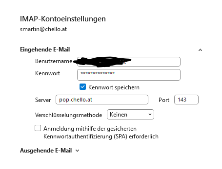
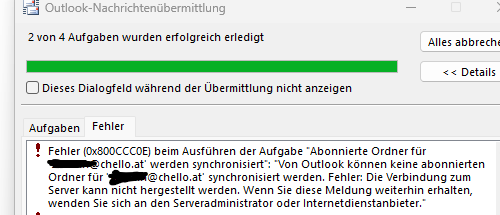

Hi,
ich habe in meinem Outlook am Laptop meine Chello-Email-Adresse angebunden. Das lief bis vor einigen Tagen reibungslos. Seit einigen Tagen gibt es immer wieder u.a. Fehler (siehe Screenshot ganz unten).
Hat sich da irgendwas geändert ? Also anderer Server, etc... ? Ich habe folgende Einstellungen:


Servus @smurf ,
Magenta stellt irgendwann den Email Dienst @chello.at / inode.at aus der UPC-Zeit ein.
Kann durchaus sein, dass es jetzt schon zu Problemen mit der Server Synchronisierung kommen könnte (Vermutlich).
Sie dir mal die Einstellungsoptionen in der Angehängten PDF-Datei für Outlook 2016 an, ob diese dir weiterhelfen.
Sonst sich mal bei der Technikline 0676 200 7777 melden, und dein Begehr schildern.
Bearbeitet von Maverick